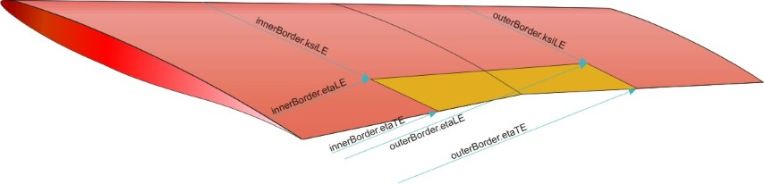
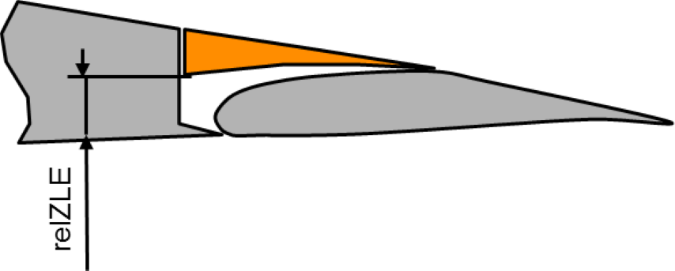

complexType · extension complexBaseType · sequence
Inner/outer border of the control surface.
Definition of the inner/outer border of the control surface.
The position on the planform of the control surface is defined by defining the eta/xsi coordinates of the inner/outer and forward/rear border. The eta/xsi coordinates refer to the parent.
In addition, optionally, the airfoil shape of the control surface can be defined closer. For the spoiler'relHeightLE' is used. If an exact control surface airfoil definition should be used, outerShape->airfoils can be used.
Please find below an example for the definition of the planform of a trailing edge device. Other controlsurfaces are similar.


| Name | Type | Constraints | Use | Default | Description |
|---|---|---|---|---|---|
@externalDataDirectory | xsd:string | optional | Directory of the external data file | ||
@externalDataNodePath | xsd:string | optional | Path of the node inside the external data file | ||
@externalFileName | xsd:string | optional | Name of the external data file |
| Name | Type | Constraints | OccurrenceHow often the element may appear at this place. The schema writes it as minOccurs and maxOccurs on the declaration. | Default | Description |
|---|---|---|---|---|---|
| sequenceThe children below must appear in exactly this order. Each may repeat as often as its own occurrence allows. | |||||
etaLE | etaIsoLineType | [1..1] required | Relative spanwise inner/outer position of the leading edge of the control surface. Reference is eta/xsi from the parent. | ||
etaTE | etaIsoLineType | [0..1] optional | Relative spanwise inner/outer position of the trailing edge of the control surface. Reference is eta/xsi from the parent. Defaults to 'etaLE'. | ||
xsiLE | xsiIsoLineType | [1..1] required | Relative chordwise inner/outer position of the leading edge of the control surface. Reference is eta/xsi from the parent. | ||
xsiTE | xsiIsoLineType | [1..1] required | Relative chordwise inner/outer position of the trailing edge of the control surface. Reference is eta/xsi from the parent. | ||
| choiceExactly one of the alternatives below may appear, unless the occurrence next to this line says otherwise. | |||||
relHeightLE | doubleBaseType | [0..1] optional | Relative high of lowest point of the spoiler leading edge, relative to the airfoil height of the parent at this position. See picture below. | ||
leadingEdgeShape | leadingEdgeShapeType | [0..1] optional | Shape of the leading edge of the control surface | ||
airfoil | contourReferenceType | [0..1] optional | Reference to the airfoil contour | ||
cpacs/vehicles/aircraft/model/wings/wing/componentSegments/componentSegment/controlSurfaces/spoilers/spoiler/outerShape/innerBordercpacs/vehicles/aircraft/model/wings/wing/componentSegments/componentSegment/controlSurfaces/spoilers/spoiler/outerShape/outerBordercpacs/vehicles/rotorcraft/model/wings/wing/componentSegments/componentSegment/controlSurfaces/spoilers/spoiler/outerShape/innerBordercpacs/vehicles/rotorcraft/model/wings/wing/componentSegments/componentSegment/controlSurfaces/spoilers/spoiler/outerShape/outerBordercpacs/vehicles/rotorcraft/model/rotorBlades/rotorBlade/componentSegments/componentSegment/controlSurfaces/spoilers/spoiler/outerShape/innerBordercpacs/vehicles/rotorcraft/model/rotorBlades/rotorBlade/componentSegments/componentSegment/controlSurfaces/spoilers/spoiler/outerShape/outerBorder| Type | Name |
|---|---|
controlSurfaceOuterShapeSpoilerType | innerBorder |
controlSurfaceOuterShapeSpoilerType | outerBorder |